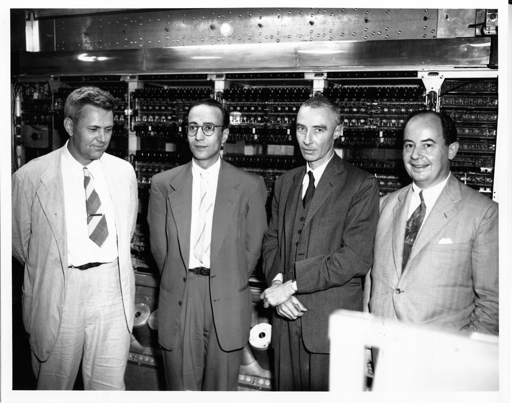

Hungarian-American mathematician, physicist, computer scientist, engineer, and polymath

Julian Bigelow, Herman Goldstine, J. Robert Oppenheimer, and John von Neumann in front of computer.
Here's a time line of von Neumann's life:
1903 - Born in Budapest, Kingdon of Hungary
1921 - Began university studies in chemical engineering rather than mathematics.
1923 - Entered as Ph.D. candidate in mathematics and chose to produce axiomatization of Cantor's set theory.
1932 - Published set of papers that made contributions to ergodic theory, a branch of mathematics involving states of dynamical systems with an invariant measure
1936 - Founded field of continuous geometry, a substitute of complex project geometry.
1941 - Derived exact distirbution of ratio of mean squares of successive differences to sample variance for independent and identically normally distributed variables
1957 - Died at Walter Reed Army Medical Center in Washington, D.C
"If one has really technically penetrated a subject, things that previously seemed in complete contrast, might be purely mathematical transformations of each other."
-- John von Neumman
If you have time, you should read more about von Neumann on his Wikipedia entry